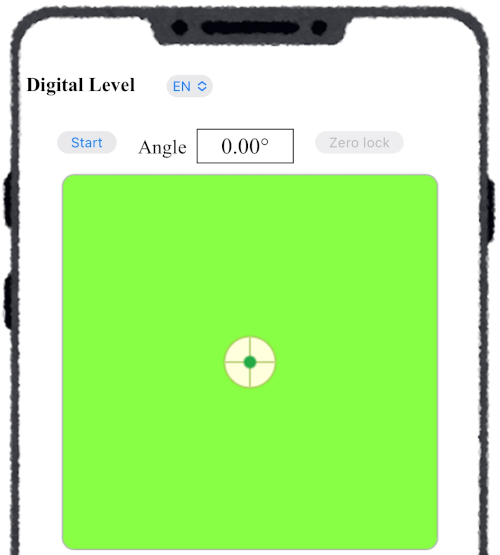
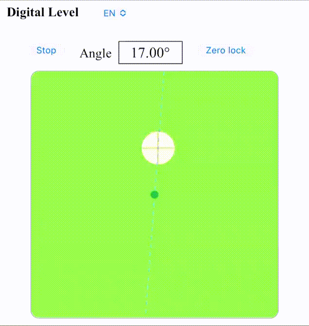
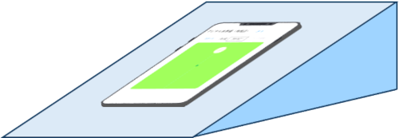
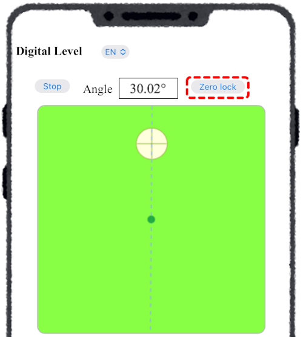
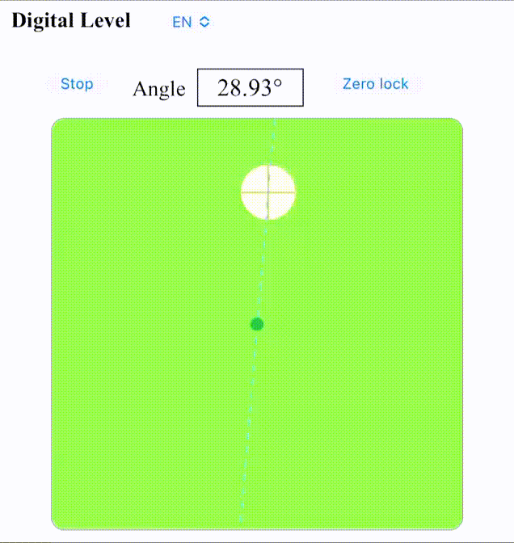
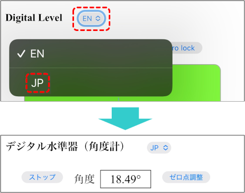

■ How to Operate
-
Start
Click the "Start" button at the top left to launch the level (inclinometer) and measure the tilt angle of the surface on which the device is placed. The light green area represents a spirit level, and the white circle represents the bubble.
After starting, when the device is tilted, the bubble moves upward in the direction of the slope. There is a center point in the middle of the light green area. When the bubble is at this center point, it indicates that the device is level.
The dashed line passing through the center point (green dot) and the center of the bubble represents the projection of the vertical line onto the device screen. When the bubble touches the center point, the background color changes to orange.

-
Measuring Slope Angle
When the device is kept stationary on a slope, the slope angle can be measured.
Note: Even if the device is stationary on the slope, if the slope itself is accelerating, accurate measurement cannot be obtained. The slope itself must also be stationary.
-
Zero Adjustment
While the level is running, clicking the "Zero Adjustment" button sets the current surface angle of the device as zero (reference) and switches to a mode where angles are measured relative to that reference. Clicking the button again cancels this mode. In this mode, the background color changes from light green to blue.

-
Language Selection
At the top of the app screen, you can switch the display language between English (EN) and Japanese (JP) using the language selection menu (currently only English and Japanese are available).